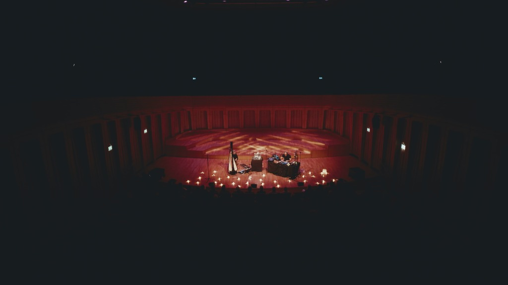
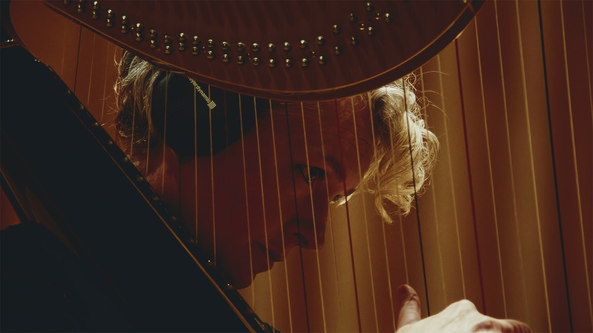
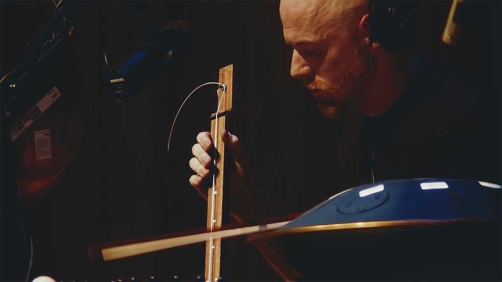

Step into a realm where sound becomes sensation, and music dares to ask the questions words cannot.

Satoru is an immersive sonic pilgrimage crafted by visionary music producer Lee House and internationally acclaimed harpist Catrin Finch. It fuses the timeless purity of experimental harp with deeply textured, electronically manipulated soundscapes and spoken word, dissolving the boundaries between sound, self, and silence.
Biographies

Catrin Finch is a cultural icon in Wales and one of the world’s foremost harpists, celebrated for her bold artistry and pioneering spirit. Trained in the classical tradition, she has carved a path that defies convention, blending the purity of the harp with a diverse array of musical genres and global influences. As a proud LGBTQ+ artist, Catrin brings authenticity, depth, and a fearless creative voice to every project she touches.

Lee House has been a dynamic presence in the music industry since 2011, with genre-spanning productions amassing over 50 million streams on Spotify. After graduating with the highest distinction ever awarded in his Music Production course, Lee became a sought-after producer and engineer at Acapela Studio. It was here that fate aligned him with Catrin Finch, sparking a creative partnership that would evolve from producing albums to mesmerizing live performances.
What to expect
Our modern lives are filled with endless distractions. Our thoughts are a constant stream of inner verbalization, endlessly narrating every event, dwelling on memories of a past that is no longer here, and worrying about possible outcomes of the future.
Satoru was designed as an antidote to this noise. We developed the music and spoken words to alter the listener's state of consciousness, bringing them into direct awareness of the present moment.
It is an invitation to step out of contextual labeling and inner analysis, and into a direct relationship with what is happening right now—the pure, unfiltered experience of “what is.” Following the profound response to these explorations, Satoru was founded.
Created with the support of Arts Council Wales, Satoru recently debuted to high praise, offering attendees not merely a performance, but a rite of passage.
You won’t be told what to feel or think. Instead, you are invited to pause, turn inward, and experience a carefully constructed unraveling. Expect to rediscover your connection to the present moment, one resonant note at a time.